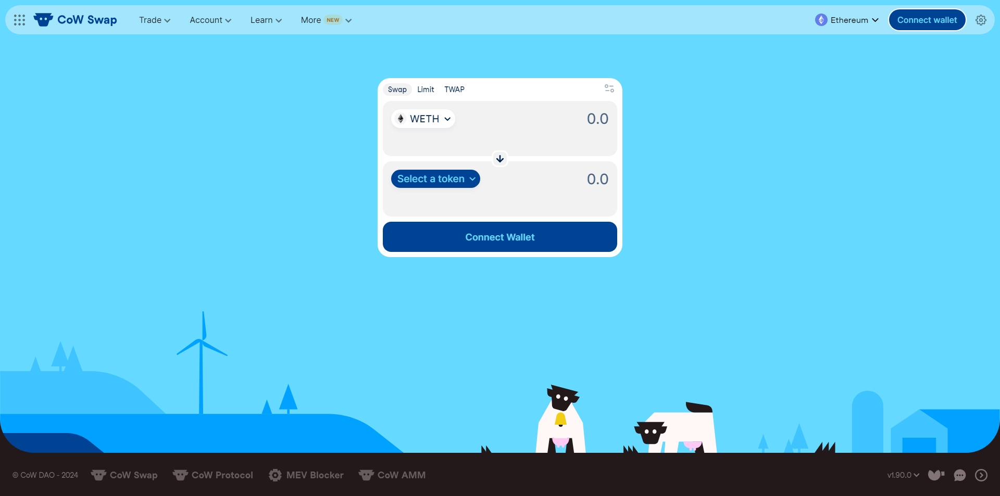

Cow Swap: A Premier Crypto Exchange
Discover the unique features and benefits of using Cow Swap for your cryptocurrency trading needs. This platform aims to provide users with a seamless and secure trading experience. Whether you are a seasoned trader or a newcomer to the crypto world, Cow Swap offers an accessible solution for all.
Why Choose Cow Swap?
Cow Swap stands out in the crowded market of cryptocurrency exchanges. Here are some reasons to consider using Cow Swap:
Secure Transactions: Cow Swap uses cutting-edge security protocols to protect your assets and personal information.
User-Friendly Interface: Designed with users in mind, Cow Swap offers an intuitive trading experience.
Efficient Swaps: With fast transaction times, you can trade cryptocurrencies without delays.
Eco-Friendly: Utilizing batch execution, Cow Swap minimizes gas fees and reduces carbon footprint.
How to Use Cow Swap
Ready to start trading? Follow these simple steps to get started with Cow Swap:
Sign up for an account at Cow Swap’s official website.
Verify your identity to comply with security protocols.
Deposit funds into your account using your preferred method.
Select the currency pair you wish to trade.
Execute your trade by setting the desired amount and confirming.
Monitor your trades and manage your portfolio through the user dashboard.
Tips for Successful Trading on Cow Swap
To maximize your trading experience on Cow Swap, consider the following tips:
Stay Informed: Keep up with the latest cryptocurrency market trends and news.
Utilize Tools: Use the charting and analytical tools provided by Cow Swap for informed decision-making.
Practice Caution: Always trade within your means and be mindful of potential risks.
Conclusion
Cow Swap is designed to cater to both novice and seasoned traders looking for a reliable and efficient crypto trading platform. With its commitment to security, user experience, and sustainability, Cow Swap is poised to become a major player in the world of cryptocurrency exchanges. Start your trading journey with Cow Swap today, and experience the future of decentralized trading.